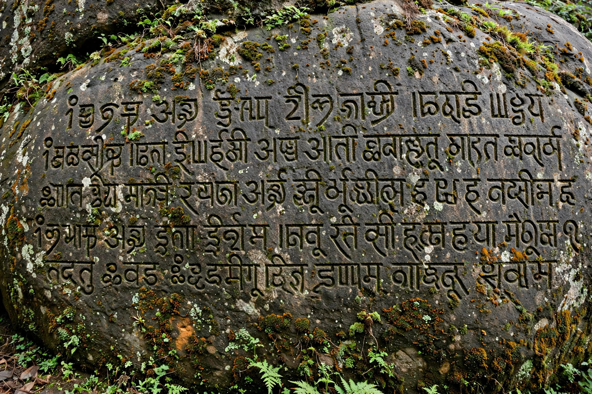

Sinhala language
| Sinhala | |
|---|---|
| Native name | සිංහල (Siṁhala) |
| Native to | Sri Lanka |
| Speakers | c. 16–17 million native |
| Family | Indo-European · Indo-Aryan |
| Writing system | Sinhala script (Brahmic) |
Sinhala (සිංහල, Siṁhala) is an Indo-Aryan language primarily spoken by the Sinhalese people of Sri Lanka, who make up the island's largest ethnic group. It is one of the two official languages of Sri Lanka, alongside Tamil.

1. History
2. Script
3. Diglossia
4. Vocabulary
History
Sinhala developed from the Prakrit dialects brought to the island by settlers from northern India, traditionally dated to the 6th century BCE with the arrival of Prince Vijaya. Cut off from the mainland, it evolved distinctive features, including influence from Tamil and later Portuguese, Dutch and English.
Script
The Sinhala script is a Brahmic abugida of rounded letters, traditionally explained by the need to write on palm leaves without tearing them. Medieval inscriptions and the great chronicles such as the Mahavamsa preserve its literary heritage.
Diglossia
Sinhala is notably diglossic: the formal written language (liya) differs markedly in vocabulary and grammar from everyday spoken Sinhala (katha), a distinction children must learn at school.
Vocabulary
Core vocabulary is Indo-Aryan, enriched by Sanskrit and Pali learned borrowing (reflecting Sri Lanka's Theravada Buddhist heritage) and by words from Tamil, Portuguese, Dutch and English.
See also: Sri Lanka · Mahavamsa · Tamil language